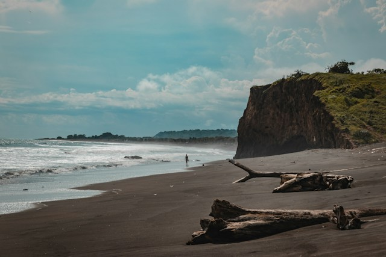

Una noche frente al Caribe
Ovnis / Misterios del cielo y el mar

Cuando cae la noche sobre el mar
En la costa del Atlántico colombiano, el mar Caribe ofrece paisajes que cambian completamente cuando desaparece la luz del día. En sectores como Salinas del Rey, en el municipio de Juan de Acosta, el horizonte se convierte en una extensa línea oscura donde el cielo y el océano parecen encontrarse.
Durante la noche, el sonido de las olas, la brisa marina y la ausencia de las luces de la ciudad crean una atmósfera particular. Al mirar hacia el horizonte pueden distinguirse puntos luminosos que despiertan preguntas: ¿son embarcaciones, aeronaves o algo que todavía no hemos logrado identificar?
Una luz que aparece sobre el agua, un destello que se mueve lentamente o una figura brillante que desaparece en el cielo pueden transformar una noche tranquila en una experiencia llena de misterio.
Luces en el horizonte
Las zonas costeras ofrecen diferentes condiciones para observar fenómenos luminosos. Las luces de los barcos que navegan mar adentro, las aeronaves que atraviesan el cielo y los satélites que orbitan la Tierra pueden confundirse fácilmente cuando se observan desde la distancia.
En febrero de 2024, habitantes de varios municipios del Atlántico compartieron videos de una fila de luces que atravesaba el cielo nocturno. Algunas personas relacionaron el fenómeno con posibles ovnis, mientras otras pensaron que se trataba de aeronaves o actividades militares.
Posteriormente, una verificación periodística explicó que las luces correspondían a un grupo de satélites Starlink y a la segunda etapa de un cohete Falcon 9. El fenómeno mostró cómo los avances tecnológicos pueden generar imágenes sorprendentes para quienes observan el cielo.
Aunque este episodio no corresponde a un avistamiento confirmado en Salinas del Rey, permite comprender por qué las luces que aparecen sobre el Caribe pueden despertar tanta curiosidad.
Entre el océano y lo desconocido
Salinas del Rey es reconocida por sus condiciones naturales para la práctica de deportes náuticos, especialmente el kitesurf. Sus vientos, corrientes y amplios paisajes costeros atraen a visitantes que buscan experiencias frente al mar.
Sin embargo, cuando llega la noche, el escenario cambia. Las cometas desaparecen, la actividad de la playa disminuye y el horizonte se convierte en un espacio de observación. Es entonces cuando cualquier luz distante puede despertar la imaginación y alimentar nuevas historias.
No existen registros públicos suficientes para afirmar que en este sector se haya presentado un fenómeno extraterrestre o una aparición inexplicable. La intención de este relato es explorar el misterio que puede surgir al contemplar el cielo y el mar desde la costa Caribe colombiana.
¿Qué podemos observar durante la noche?
- Satélites artificiales: puntos luminosos que se desplazan por el cielo y pueden reflejar la luz solar.
- Embarcaciones: luces de barcos que navegan lejos de la costa.
- Aeronaves: luces intermitentes de aviones que cruzan diferentes rutas aéreas.
- Estrellas y planetas: cuerpos celestes que pueden confundirse con luces cercanas cuando se observan sin referencias de distancia.
Una historia que permanece abierta
Frente al Caribe, cada noche ofrece un espectáculo diferente. El movimiento del mar, la inmensidad del cielo y las luces que aparecen a lo lejos convierten este paisaje en un escenario perfecto para la contemplación y el misterio.
Quizás la próxima luz que aparezca sobre el horizonte tenga una explicación conocida. O quizás sea el comienzo de una nueva historia que alguien contará después de una noche frente al mar.